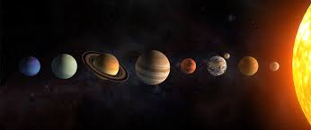

Solar System |
The solar system is a group of celestial bodies that orbit the Sun, our central star. It includes eight planets—Mercury, Venus, Earth, Mars, Jupiter, Saturn, Uranus, and Neptune—along with their moons. The solar system also contains dwarf planets like Pluto, countless asteroids in the asteroid belt, and icy comets in the Kuiper Belt and Oort Cloud. The four inner planets are rocky, while the outer ones are gas or ice giants. Gravity holds the system together, and everything orbits the Sun. The solar system formed about 4.6 billion years ago from a cloud of gas and dust.
Designed and developed by Ishika Ahuja 6G